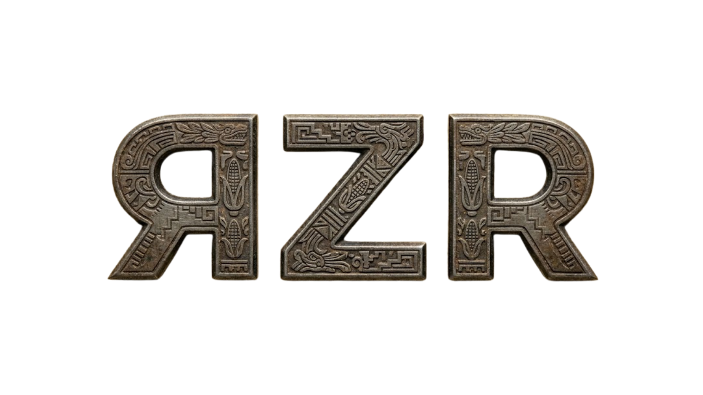

Independencia de México
La independencia de México fue la consecuencia de un proceso político y social resuelto por las armas, que puso fin al dominio español mediante una guerra civil multifacética. Tuvo lugar en la mayor parte de los territorios de Nueva España, y dio como resultado el surgimiento del Primer Imperio mexicano. La pérdida de esta posesión tuvo una importancia decisiva para la economía del Imperio español, ya que los ingresos mexicanos representaban el ochenta por ciento del total de los caudales americanos al final del periodo colonial. La guerra por la independencia mexicana comenzó el día 16 de septiembre de 1810, y terminó con la entrada del Ejército Trigarante a la Ciudad de México, el día 27 de septiembre de 1821.
El movimiento de la independencia de México tiene como marco la Ilustración y las revoluciones liberales de la última parte del siglo XVIII. Por esa época la élite ilustrada comenzaba a reflexionar acerca de la ideas de soberanía popular y las relaciones entre la España peninsular y el resto del imperio. Los cambios en la estructura social y política derivados de las reformas borbónicas, a los que se sumó una profunda crisis económica en Nueva España, también generaron un malestar entre algunos segmentos de la población.
El movimiento que condujo a la independencia de México comenzó con el alzamiento armado conocido como Grito de Dolores el 16 de septiembre de 1810 y continuó con la guerra de independencia entre realistas e insurgentes que terminó el 27 de septiembre de 1821.
La independencia de México se alcanzó luego de que las tropas realistas del militar Agustín de Iturbide se unieron a los insurgentes, formularon el Plan de Iguala en febrero de 1821 y formaron el Ejército Trigarante que entró en la Ciudad de México en septiembre de 1821. El 28 de septiembre de 1821 se firmó el acta de independencia.
Una vez que se alcanzó la independencia, la forma de gobierno que debía adquirir el Estado mexicano fue motivo de conflictos. La declaración de la independencia consagró a México como un imperio y, poco después, Iturbide fue proclamado emperador. Sin embargo, en marzo de 1823 Iturbide se vio obligado a abdicar y en 1824 se aprobó una Constitución federal que instauró una república, llamada Estados Unidos Mexicanos.